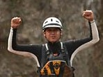

Come meet our guides! They each have their own strengths and quirks that make them unique for each trip you take!
Enrique Ramirez
Enrique is great with kids and adults alike, always pointing out things along the river that will surely catch your interest. He is also excellent when navigating the rapids and is a great choice for fmaily trips.
When not on the river, Enrique likes spending his time with his wife, Anathalia, and their three daughters.
- Age: 49
- Trips Navigated: 27
- Flips: 3

Harry Harper
If you want a little more adventure in your river ride, Harry is the guide for your group! He is our newest member and extremely experienced on this river. He knows how to get into the tight corners of the river and get you back out without tipping you. He also sees the rafting trip as a race, so often he's the first to enter and first to return.
Harry likes to kayak the river when he isn't on duty guiding others on rafts. He and his fiance Katie have had plans of moving to the river when they get married.
- Age: 23
- Trips Navigated: 14
- Flips: 2
Calita "Callie" Bush
Callie is our most experienced guide, who has been on this river for more than 25 years. She is a strict but easy-going guide who wil let you ride the river at your own pace, as long as you're ready for the rapids when they come.
Callie loves being a "grandma" for her one-year-old grandson, Teddie. When she's not with him and her daughter's family, she often is the lunch-provider for the rafts on her off-days.
- Age: 53
- Trips Navigated: 59
- Flips: 2
Harvey "Cole" Collier
Harvey "Cole" is a guide for all ages and experiences. He's our best beginner's guide who will give you a good estimate on what you'll see on the river and guide you through it without incident. He's a good man to ask when you want a reference to other rivers you may be able to raft.
Cole likes to use his off-days to fish in the river and catch a dinner for his wife, Kathy, and their children Davey and Mina.
- Age: 36
- Trips Navigated: 43
- Flips: 7

Jose "Joe" Harrison
"Hey, Joe!" Joe is our kayaking manager. He teaches beginner kayakers how to white water raft rivers on his off days, and keeps track of the gear everyone needs on his working days.
During the winter months, Joe likes to travel to Arizona to visit his parents with his wife, Casey, and their youngest daughter Jasmine. His favorite treat is a prickly pear flavored salt-water taffy.
- Age: 52
- Trips Navigated: 58